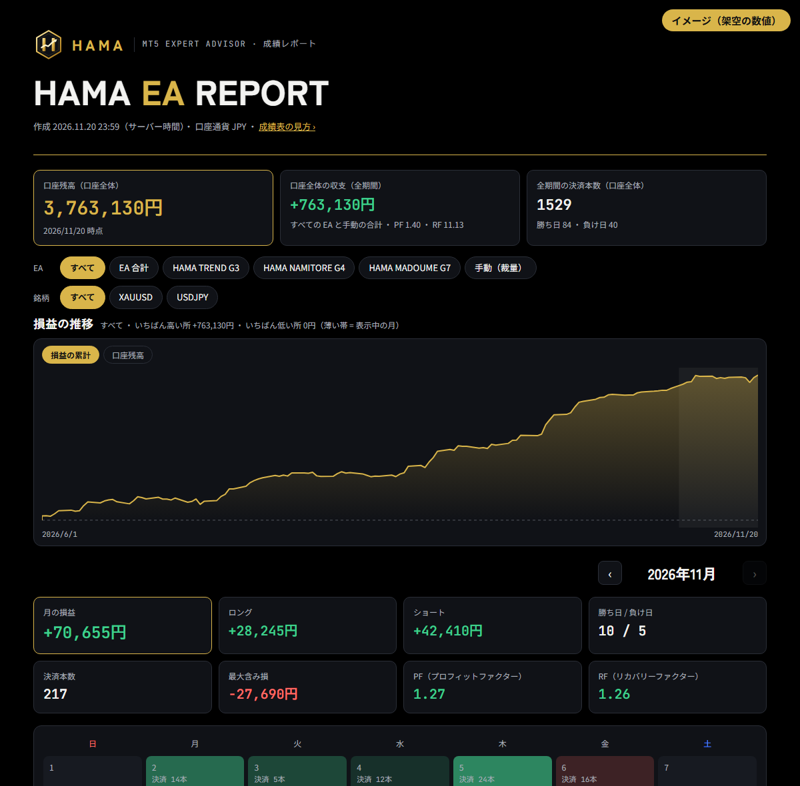

開き方
- パネルの「成績」ボタンを押す
EA が、その MT5 の取引の履歴から成績表を作って、ブラウザで開きます。パソコンの中だけで作るので、ネットにつながっていなくても開けます。 - 新しい取引を反映するとき
成績表は、ボタンを押した時点の内容です。新しい取引を反映するには、もう一度「成績」ボタンを押します。
損益はスワップ・手数料を含みます（入金・出金は含みません）。日付は、ブローカーのサーバー時間で区切っています。
画面の見方
上から順に、次のように並んでいます。
| 場所 | できること・出ているもの |
|---|---|
| いちばん上のまとめ | 「口座残高」と「口座全体の収支（全期間）」は、何を選んでいてもいつも口座全体です。3 つ目は、選んでいる EA・銘柄の全期間の収支です（「すべて」のときは口座全体の決済本数）。 |
| EA | 成績表には、その MT5 の口座の取引がすべて入ります。 「すべて」＝口座全体 「EA 合計」＝手動以外のすべての EA 各 EA のボタン＝その EA の分 「手動（裁量）」＝手で取引した分 HAMA 以外の EA は、注文のコメントか「EA 番号」の名前で出ます。 |
| 銘柄 | 取引した銘柄が 2 つ以上あるときに出ます。「すべて」か、銘柄ごとに切り替えます。EA のボタンと組み合わせて使えます（例：手動（裁量）× USDJPY）。 |
| ✎ 名前を変える | EA の表示名を変えます（このブラウザが覚えます）。ほかの EA と同じ名前にすると、まとめて集計します。空にすると元の名前に戻ります。 |
| 損益の推移（グラフ） | 「損益の累計」は、選んでいる EA・銘柄の損益を全期間で積み上げた線です。「口座残高」は、口座全体の残高の線です（入金・出金も含みます）。薄い帯は、いま表示している月です。 |
| 月の切り替え | 前の月か次の月に切り替えます。 |
| 月のまとめ | 選んでいる月の、次の数字です（下の「言葉の意味」）。 損益 ロング ショート 勝ち日 / 負け日 決済本数 最大含み損 PF RF |
| カレンダー | 日ごとの損益と決済本数、その日の最大含み損です。日付を押すと、その日を選びます。 |
| 日ごとの一覧 | 選んでいる月の、日ごとの次の数字です。いちばん下が月の合計です。 損益 ロング ショート 決済本数 最大含み損 終了時の残高 |
| 月ごとの一覧 | 月ごとの次の数字です。行を押すと、その月に切り替わります。いちばん下が全期間です。 損益 ロング ショート 勝ち日 負け日 決済本数 最大含み損 PF RF |
言葉の意味
| 言葉 | 意味 |
|---|---|
| 損益 | 決済したポジションの損益の合計（スワップ・手数料を含む）。 |
| ロング / ショート | 決済したポジションの向き（買い / 売り）ごとの損益。 |
| 勝ち日 / 負け日 | 1 日の損益がプラスだった日 / マイナスだった日の数。 |
| 決済本数 | 決済したポジションの本数。 |
| 最大含み損 | その日に持っていたポジションの合計含み損の、いちばん深い値。1 分足の高値・安値から計算した目安です。EA をまとめて表示しているときは、それぞれを足した目安です。 |
| 終了時の残高 | その日の終わりの口座残高。 |
| PF（プロフィットファクター） | 総利益 ÷ 総損失。損失が 1 度もないときは ∞、利益がないときは − と表示します。 |
| RF（リカバリーファクター） | 純損益 ÷ 最大ドローダウン。最大ドローダウンは、その期間で、損益の累計が山から谷へいちばん下がった額です（日中の含み損も含む目安）。 |
成績表は、過去の取引の記録を集計したものです。これからの成績を示すものではありません。